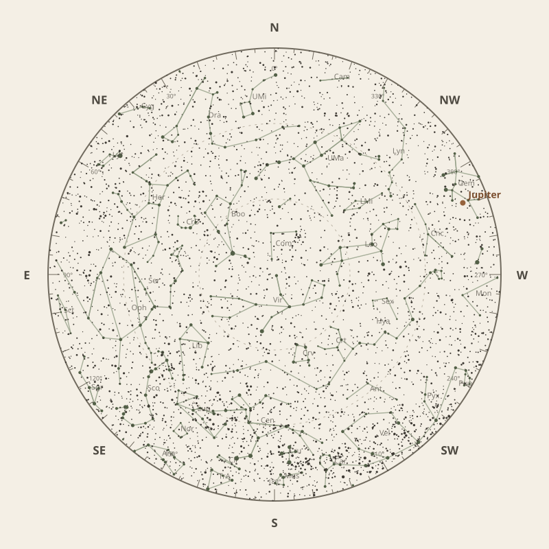

← Annual almanac


North is at the top; east is at the left. Solar System objects shown are above the horizon at 10 pm.
Monthly field almanac
May 2026
Galactic Centre viewing is best on 20 May 2026, from 10:26 pm to 5:40 am, reaching 50°.
- New Moon
- 17 May Darkest skies
- Full Moon
- 2 May Brightest skies
- Best dark window
- 14 May 10h 36m
Current conditions
Checking the sky near Malabar Coast, India…
Sky chart: 15 May 2026, 10 pm
Malabar Coast, India local time.
Show static monthly chart

Night planner
Choose a date to see astronomical darkness, Moon interference, Galactic Centre visibility, and planet altitudes and times.
Best low-Moon dark periods this month
- 7:05 pm–5:41 am10h 36m · 18% Moon
- 7:05 pm–5:41 am10h 36m · 10% Moon
- 7:05 pm–5:40 am10h 35m · 4% Moon


Galactic Centre sessions
- 10:26 pm–5:40 am7h 13m · core to 50°
- 10:36 pm–5:40 am7h 05m · core to 50°
- 10:36 pm–5:40 am7h 04m · core to 50°
Events
- HIP 67328 lunar occultation3:31 am to 4:43 am; Moon at 27° altitude for the first listed contact.
- HIP 71295 lunar occultation2:52 am to 3:54 am; Moon at 41° altitude for the first listed contact.
- HIP 79050 lunar occultation9:43 pm; Moon at 19° altitude for the first listed contact.
May highlights
- Planets
Jupiter
Best monthly date at 62° altitude.
- Occultations
HIP 67139 lunar occultation
1:36 am to 3:02 am; Moon at 50° altitude for the first listed contact.
- Meteor showers
Eta Aquariids
Peak conditions: 88% Moon illumination; 28° altitude predawn.
- Milky Way
Milky Way core window
4h 00m with 50° altitude.


Moon phases
99%
74%
10%
36%
94%
For faint deep-sky objects, observe when the Moon is below the horizon or weakly illuminated. For lunar relief, observe near the terminator; full Moon is best suited to ray systems and albedo features.
Download Moon phase CSV →

Planet visibility
Evening
- Jupiter1 May · 7:00 pm62° · Excellent
- Venus28 May · 7:00 pm30° · Good
- Uranus1 May · 7:00 pm13° · Poor
- Mercury28 May · 7:00 pm12° · Poor
 Jupiter
Jupiter Venus
Venus Uranus
Uranus Mercury
MercuryPredawn
- Neptune31 May · 5:30 am49° · Excellent
- Saturn31 May · 5:30 am42° · Good
- Mars31 May · 5:30 am19° · Fair
 Neptune
Neptune Saturn
Saturn Mars
Mars